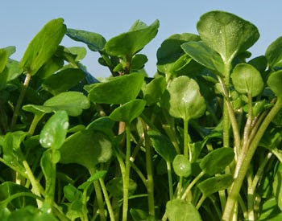

Ayuntamiento de Senés
JARDIN BOTANICO DE ESPECIES AUTOCTONAS DE SENES

Nasturtium officinale

El berro (Nasturtium officinale) es una planta herbácea perenne acuática o semiacuática característica de zonas húmedas del ecosistema mediterráneo. Se desarrolla principalmente en arroyos, acequias y manantiales, donde el agua fluye de forma constante, formando densas colonias vegetales.
Presenta tallos rastreros y huecos que pueden enraizar en contacto con el agua, favoreciendo su expansión. Sus hojas son compuestas, de color verde intenso, con foliolos redondeados y carnosos. Durante la floración produce pequeñas flores blancas agrupadas en racimos, que contrastan con el follaje.
El berro se distribuye ampliamente por Europa, Asia y otras regiones templadas, siempre asociado a cursos de agua limpia. En el ámbito mediterráneo, aparece en acequias, fuentes y zonas húmedas permanentes, siendo un indicador de buena calidad del agua.
En entornos como los de la Sierra de los Filabres, su presencia está ligada a manantiales y pequeños cauces, donde forma parte de la vegetación de ribera.
El berro es una planta de alto valor nutricional, rica en vitaminas, minerales y compuestos antioxidantes. Destaca por sus propiedades depurativas, digestivas y estimulantes, siendo consumido tradicionalmente en crudo en ensaladas.
Además, se le atribuyen beneficios para el sistema respiratorio y la circulación, formando parte de la medicina popular en diversas regiones.
El berro simboliza la pureza y la vida, al estar estrechamente vinculado al agua y a entornos naturales bien conservados. Representa la frescura y la renovación dentro del paisaje vegetal.
Su crecimiento en aguas limpias lo asocia con la salud y el equilibrio natural del ecosistema.
En Senés, el berro ha sido recolectado en fuentes y acequias para su consumo en ensaladas.
Se utilizaban entre otras, para el mal de piedra y como depurativas.
El berro florece principalmente en primavera, aunque puede hacerlo durante gran parte del año en condiciones favorables. Sus flores blancas aportan diversidad al ecosistema acuático.
El berro es considerado una de las plantas silvestres comestibles más antiguas, consumida desde la época romana. Su cultivo requiere agua limpia y corriente, lo que limita su presencia a entornos bien conservados.
Además, su sabor característico lo convierte en un ingrediente muy valorado en la gastronomía tradicional.